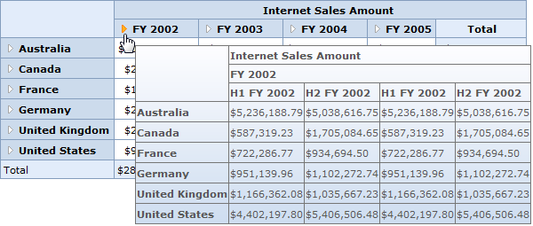

The OLAP Grid provides drill-down information through the header cell ToolTip for hierarchical dimensions, enabling efficient preview of data before drilling down. It can be enabled using the following properties of the OLAP Grid:
|
[C#] // Enabling HeaderCell Tooltip. this.OlapGrid1.ShowHeaderToolTip= true; |
|
[VB] 'Enabling HeaderCell Tooltip. Me.OlapGrid1.ShowHeaderToolTip= True |

Figure 27: OLAP Grid with Header cell Tooltip